| Menu Arquivo |
  |
Importação
de Dados
Esse menu dá
acesso a uma lista de operações que permite o
carregamento de um arquivo de dados em formatos externos ao MATLAB.
Clique no menu “Arquivo ►
Importar dados ... ► [opção desejada]” ou clique no botão na
Barra de Ferramentas e escolha a opção
desejada:
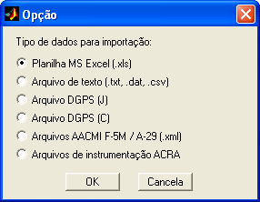
Os seguintes
formatos são suportados:
- Planilha
Excel (.xls)
- Arquivo
de texto (.txt,
.dat, .csv)
- Arquivo
DGPS tipo J
- Arquivo
DGPS tipo C
- Arquivos
AACMI F-5M /
A-29 (.xml)
- Arquivos
de
instrumentação ACRA
- Nomes
de parâmetro (.txt,
.xls)
O conteúdo e
formatação dos arquivos devem seguir padrões pré-estabelecidos
para possibilitarem o carregamento pelo R_DAT.
|
Nota: Se o arquivo
atual não tiver sido salvo e o usuário quiser importar outros dados, o
R_DAT questionará se o usuário deseja salvar o arquivo atual (exceto
para importação de nomes de parâmetros). |
Importando
Planilha MS Excel
Clique em
“Arquivo ► Importar dados
... ► Planilha Excel (.xls)”,
localize o
arquivo desejado e clique “Abrir”.
O R_DAT importará a primeira planilha do arquivo (as demais serão ignoradas) e analisará os dados.
Caso haja algum parâmetro de tempo na planilha com formato hh:mm:ss (ou qualquer formato de data/hora do Excel), o mesmo deverá ser convertido para o padrão MATLAB para ser corretamente interpretado. Caso haja alguma dada imbutida no parâmetro (por exemplo, no formato dd/mm/aaaa hh:mm:ss), a parcela da data será descartada e apenas o tempo será mantido.
|
Nota: Se o parâmetro de tempo estiver definido como texto no Excel, mesmo que no formato hh:mm:ss, o mesmo não será reconhecido pelo R_DAT. |
Ao ser questionado, o usuário deverá indicar os parâmetros de tempo da
planilha:
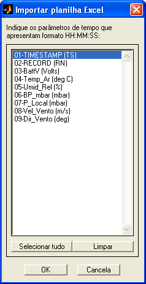
Após a
importação, o R_DAT atualizará internamente as matrizes de
trabalho DADOS e PARAM.
Para a correta
importação, a planilha deve ter a seguinte
formatação:
Primeira linha:
Nomes
dos parâmetros (opcional);
Segunda linha:
Nomes
das unidades (opcional), com ou sem parênteses ou colchetes;
Demais linhas:
Valores
numéricos.
Exemplo:
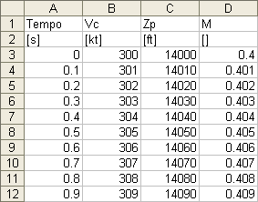
A formatação
das primeiras linhas de texto segue as mesmas
restrições que as matrizes PARAM
e
UNITS.
No caso de
serem encontrados valores não numéricos ou vazios
no corpo da planilha, será atribuído “NaN”
(Not a Number),
e
o usuário será informado da quantidade de ocorrências.
|
Nota: A primeira coluna deve conter necessariamente um parâmetro numérico. Se houver apenas texto na primeira coluna, o arquivo não será reconhecido. |
Importando
Arquivos de Texto
Clique em
“Arquivo ► Importar dados
... ► Arquivo de texto (.txt,
.dat, .csv)”, localize o arquivo
desejado e clique “Abrir”.
O usuário será
questionado se deseja habilitar a função de
substituição de texto-padrão por valor numérico. Caso opte por
habilitá-la,
deverá localizar outro arquivo de texto ou planilha Excel contendo a
lista de
substituições
desejada.
O arquivo de substituição de texto por número deve conter duas colunas:
- 1ª coluna: Texto-padrão a ser substituído;
- 2ª coluna: Valor numérico correspondente.
No caso de
texto, as colunas podem ser separadas por espaço, vírgula,
ponto-e-vírgula ou tabulação.
Exemplo de
lista de substituição:
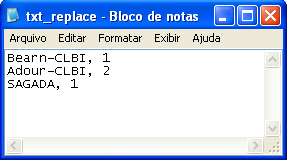
No exemplo
acima, todas as ocorrências do texto “Bearn-CLBI”
serão convertidas no número 1 e assim por
diante. Essa operação não considera a diferença entre maiúsculas e
minúsculas
(não é case-sensitive)
e também não considera espaços extras no texto.
O R_DAT
informará, para confirmação do usuário, as
substituições a serem realizadas:
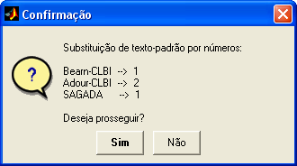
Na ocorrência
de texto representando horas, o R_DAT o
interpretará e converterá para segundos corridos.
Os formatos
aceitos são: "h:m:s:ms", "h:m:s" e "h:m". Para mais
informações sobre as
notações de tempo, clique aqui.
Exemplo: '10:15:23.5' será
convertido para 36923.5.
Na ocorrência
de texto representando coordenadas geográficas, o R_DAT o
interpretará e converterá para graus.
Os formatos
aceitos são: D GG°MM’ e D GG°MM’SS”. Para mais
informações sobre as
notações de coordenadas, clique aqui.
Na ocorrência
de texto representando datas, o R_DAT o
interpretará e converterá para ano corrido (com decimais).
Os formatos
aceitos são: "dd/mm/aa" e "dd/mm/aaaa". Para mais
informações sobre as
notações de data, clique aqui.
Para importar
datas em
parâmetros separados (por exemplo, “dia”, “mês” e “ano”),
separe o
nome do
parâmetro e as datas nos três
componentes, usando o delimitador apropriado para o arquivo.
O R_DAT
importará o arquivo, analisará os dados, realizará
as substituições (caso aplicável) e atualizará internamente as matrizes
de
trabalho DADOS e PARAM.
Após a
importação, o R_DAT
informará ao usuário caso algum parâmetro não contenha dados válidos
(apenas NaNs), e o
usuário terá a opção de excluí-los:
São suportados
quaisquer arquivos que contenham dados na
codificação de texto ASCII, independentemente da extensão. Para fins de
procura, são consideradas inicialmente as extensões
.txt (texto
do Windows), .dat
(dados no formato texto) e .csv
(comma separated
values),
mas o usuário pode selecionar a opção de exibir todos os tipos de
arquivo (*.*)
e localizar qualquer arquivo desejado.
Para a correta
importação, a tabela deve ter a seguinte
formatação:
- Primeira linha: Nomes
dos parâmetros (opcional);
- Segunda linha: Nomes
das unidades (opcional), com ou sem parênteses ou colchetes;
- Demais linhas:
Valores
numéricos com ponto como separador decimal.
Delimitadores
suportados:
tabulação, vírgula, espaço e ponto-e-vírgula.
Apenas um tipo
de delimitador por arquivo é suportado. O
R_DAT identifica automaticamente o delimitador mais provável e ignora
os demais.
Delimitadores contíguos do tipo “espaço” são considerados como um único
delimitador.
Exemplo:
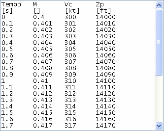
A formatação
das primeiras linhas de texto segue as mesmas
restrições que as matrizes PARAM
e UNITS.
Caso sejam
encontrados valores não numéricos ou vazios no
corpo do arquivo que não sejam texto-padrão, data ou hora, será
atribuído “NaN”
(Not a Number),
e o usuário será informado da
quantidade de ocorrências. A quantidade de substituições de
texto-padrão também
será informada.
Importando
Arquivos de Processamento
DGPS Tipo J
Clique em
“Arquivo ► Importar dados
... ► Arquivo DGPS (J)”, localize o arquivo desejado e
clique
“Abrir”.
O arquivo de
processamento DGPS tipo J (por exemplo, JASEEMOB.303)
é um caso particular de importação de arquivo
de texto, em que as colunas são conhecidas. Esse tipo de arquivo é
gerado pelo
programa PNAV® (Precise
Differential GPS Navigation)
da empresa Ashtech, que
realiza processamento de
dados de trajetografia
e topografia com uso de DGPS (Differential
GPS).
O R_DAT importará o arquivo diretamente do formato original e questionará ao usuário quais parâmetros adicionais deseja que sejam calculados.
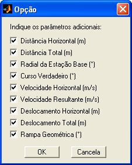
O usuário terá
a opção de descontar
os dias da semana GPS, mantendo apenas as horas, minutos e segundos do
dia em
que o dado foi coletado.
Os parâmetros
originais importados são os seguintes:
|
Parâmetro |
Descrição |
|
Tempo GPS (s) |
Tempo de
referência GPS (inclui dias da semana GPS) |
|
PDOP |
Position
Dilution of Precision |
|
Dist Leste (m) |
Distância da
base no eixo leste |
|
Erro RMS E (m) |
Erro RMS da
distância no eixo leste |
|
Dist Norte (m) |
Distância da
base no eixo norte |
|
Erro RMS N (m) |
Erro RMS da
distância no eixo norte |
|
Altura (m) |
Altura
geométrica com relação à base |
|
Erro RMS H (m) |
Erro RMS da
altura geométrica |
|
Vel Leste (m/s) |
Velocidade no
eixo leste |
|
RMS Vel E (m/s) |
Erro RMS da
velocidade no eixo leste |
|
Vel Norte (m/s) |
Velocidade no
eixo norte |
|
RMS Vel N (m/s) |
Erro RMS da
velocidade no eixo norte |
|
Vel Vert (m/s) |
Velocidade
vertical |
|
RMS VVert
(m/s) |
Erro RMS da
velocidade vertical |
|
Resíduo (m) |
Resíduo médio
da medição após o ajuste da solução |
|
Chi² |
Indicador de
qualidade do ajuste da solução (confiável < 1) |
|
SVs |
Número de
satélites usados no processamento |
|
Mov/Stat (1/0) |
Tipo de
processamento (dinâmico/estático) |
Os parâmetros
calculados pelo R_DAT são os seguintes:
|
Parâmetro |
Descrição |
|
Dist Horiz (m) |
Distância
horizontal da base |
|
Dist Total (m) |
Distância
total até a base (inclui altura) |
|
Radial (°) |
Radial
verdadeira com relação à base |
|
Curso (°) |
Curso
verdadeiro do deslocamento |
|
Vel Horiz (m/s) |
Velocidade
horizontal |
|
Vel Res (m/s) |
Velocidade
resultante (inclui velocidade vertical) |
|
Desloc Horiz (m) |
Deslocamento
horizontal da trajetória |
|
Desloc Total (m) |
Deslocamento total da trajetória (inclui deslocamento vertical) |
|
Rampa Geomét (°) |
Rampa
geométrica da trajetória |
|
Nota:
O cálculo do curso não é válido caso as velocidades leste e norte sejam
muito próximas de zero devido às oscilações residuais, que
podem gerar valores espúrios de curso. Os valores inválidos de
curso são interpolados linearmente entre os valores válidos mais
adjacentes. |
Para mais
informações, consulte o manual de operação do PNAV®
disponível na biblioteca do IPEV.
Após a importação e a criação dos parâmetros adicionais, o R_DAT atualizará internamente as matrizes de trabalho DADOS e PARAM.
Importando
Arquivos de Processamento
DGPS Tipo C
Clique em
“Arquivo ► Importar dados ...
► Arquivo DGPS (C)”, localize o arquivo desejado e clique “Abrir”.
O arquivo de
processamento DGPS tipo C (por exemplo, CRMT1K08.095)
é um caso particular de importação de arquivo
de texto, em que o cabeçalho e as colunas são conhecidos. Esse tipo de
arquivo
é gerado pelo programa PNAV® (Precise
Differential GPS Navigation)
da empresa Ashtech, que
realiza processamento de
dados de trajetografia
e topografia com uso de DGPS (Differential
GPS).
O R_DAT
importará o arquivo diretamente do formato original,
criará a lista de parâmetros e atualizará internamente as matrizes de
trabalho
DADOS e PARAM.
Os parâmetros
importados são os seguintes:
|
Parâmetro |
Descrição |
|
Dia |
Dia em que foi
realizada cada leitura |
|
Mês |
Mês em que foi
realizada cada leitura |
|
Ano |
Ano em que foi
realizada cada leitura |
|
Tempo GMT (s) |
Tempo GMT (não
inclui dias da semana GPS) |
|
SVs |
Número de
satélites rastreados |
|
PDOP |
Position
Dilution of Precision |
|
Latitude (°) |
Latitude |
|
Longitude (°) |
Longitude |
|
Altitude (m) |
Altitude
geodésica |
|
RMS Alt (m) |
Erro RMS da
altitude |
|
Flag |
Informação
sobre ambiguidades e filtro de Kalman |
|
Vel Leste (m/s) |
Velocidade no
eixo leste |
|
Vel Norte (m/s) |
Velocidade no
eixo leste |
|
Vel Vert (m/s) |
Velocidade
vertical |
Para mais
informações, consulte o manual de operação do PNAV®
disponível na biblioteca do IPEV.
Importando
Arquivos AACMI
Clique em
“Arquivo ► Importar dados
... ► Arquivos AACMI F-5M / A-29 (.xml)”,
localize a pasta que contém os arquivos desejados e clique “OK”.
Os arquivos AACMI (Autonomous Air Combat Maneuver Instrumentation) são criados pelos sistemas aviônicos das aeronaves F-5M e A-29 no padrão .xml e usados para reconstituição e reprodução de um voo com múltiplas aeronaves para debriefing. Parâmetros de voo, navegação, radar, armamento etc (dependendo da aeronave) são extraídos do barramento de dados e gravados a cada 100 ms em um cartucho de memória sólida (MMC) em uma série de arquivos sequenciais chamados "ACDAT###.xml", contendo aproximadamente um minuto de gravação cada.
Além disso, parâmetros de motores, sistemas hidráulicos e de combustível são gravados a cada 500 ms em um arquivo chamado "ENG_DAT.xml" (apenas F-5M). Para cada voo é criado um único arquivo.
Antes da
importação, o usuário deve escolher os
parâmetros ou blocos de parâmetros desejados e as opções, conforme
janela
apresentada pelo
R_DAT:
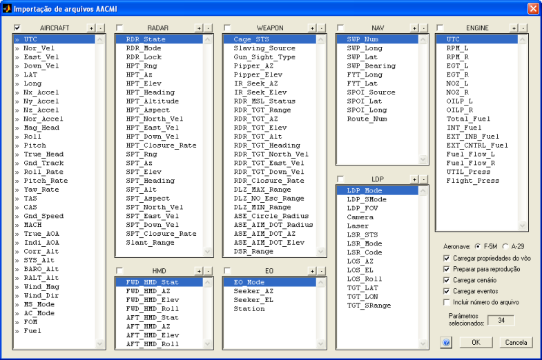
Para selecionar
ou desselecionar
um bloco inteiro de parâmetros, clique na checkbox ao lado do nome do
bloco.
Para selecionar
ou desselecionar um
grupo de parâmetros, selecione as linhas desejadas e clique nos botões “ + ” ou “ – “ ao lado do nome
do bloco.
Para selecionar
ou desselecionar
um parâmetros específico, dê um duplo-clique sobre o nome do parâmetro.
Os parâmetros
selecionados são indicados pelo símbolo “
» ” à esquerda dos nomes.
O número de
parâmetros selecionados é indicado no campo
“Parâmetros selecionados”.
Clique aqui
para
visualizar uma tabela com a lista de parâmetros, descrição e unidades.
- O tipo de aeronave deve ser indicado no campo "Aeronave", para a correta inserção das unidades.
- Caso deseje criar a variável "properties" com informações provenientes dos arquivos "GENERAL.xml", "FLT_DAT.xml" e "REAL_INV.xml", marque a opção "Carregar propriedades do voo".
- Caso deseje que o R_DAT prepare os dados para a Ferramenta de Reprodução do Voo (HUD e TSD), marque a opção "Preparar para reprodução". As unidades serão corrigidas e a lista de parâmetros configurada.
- Caso deseje importar os arquivos de cenário tático para exibição no TSD da Ferramenta de Reprodução do Voo, marque a opção "Carregar cenário". Os waypoints, rotas, áreas etc. serão importados.
- Caso deseje importar os eventos do voo gravados pelo sistema aviônico no arquivo "EVENTS.xml", marque a opção "Carregar eventos". Uma lista de tipos de eventos será apresentada ao usuário para seleção.
-
Caso queira
criar um parâmetro com o número do arquivo ACDAT###.xml de onde cada
trecho foi obtido, marque a opção "Inserir número do arquivo".
O R_DAT
importará os arquivos diretamente do formato
original, criará a lista de parâmetros e atualizará internamente as
matrizes de
trabalho DADOS e PARAM.
Dependendo da
quantidade e tamanho dos arquivos, a
importação pode levar alguns minutos. Uma janela informará ao usuário o
progresso e o tempo restante estimado. Ao fechar essa janela, a
importação será
interrompida e os arquivos restantes serão ignorados.
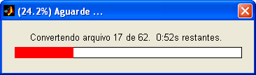
Caso a pasta
indicada contenha os arquivos “GENERAL.xml”, "FLT_DAT.xml" e “REAL_INV.xml”, com
informações gerais do
voo e da configuração da aeronave, o R_DAT importará as
informações e as colocará na variável "properties". Essas informações
poderão ser editadas pela janela "Propriedades".
- O parâmetro "Pickle" (sinal do botão de soltura de armamento) é calculado a partir dos eventos de "AA launch" e "AA release" do arquivo "EVENTS.xml", e considera um tempo de acionamento fixo de 1 segundo.
- O parâmetro "Trigger" (sinal do gatilho) é calculado a partir dos eventos de "AA trigger" e "AG trigger" do arquivo "EVENTS.xml".
Após importar os dados, o R_DAT questionará se o usuário deseja incorporar dados de até outras 3 aeronaves (latitude, longitude, altitude e proa). Essas aeronaves serão apresentadas na ferramenta de reprodução do voo, simulando um sistema de "data-link".

Ao clicar "Sim", indique a pasta que contém os arquivos "ACDAT" ou "Cyclic.zip" de cada uma das outras aeronaves.
Após concluir a
importação, o R_DAT
informará ao usuário caso algum parâmetro não contenha dados válidos
(apenas NaNs), e o
usuário terá a opção de excluí-los:
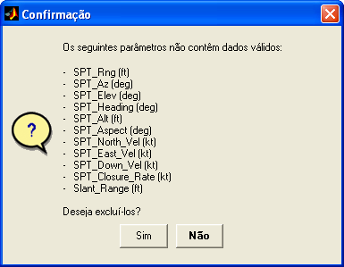
Importando
Arquivos de Instrumentação ACRA
O usuário
poderá importar os arquivos gerados pelo sistema
de instrumentação ACRA KAM-500.
Clique em
“Arquivo ► Importar dados
... ► Arquivos de instrumentação ACRA”.
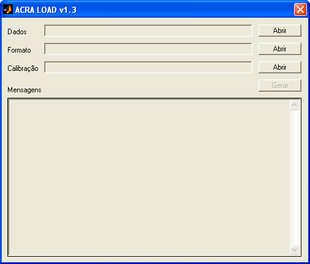
Através dos botões "Abrir", indique a pasta onde se encontram os arquivos .mat dos parâmetros, a planilha de formato dos arquivos e a planilha com os coeficientes de calibração. As planilhas são geradas, respectivamente, pelas Subdivisões de Instrumentação e de Calibração da Divisão de Suporte Técnico do IPEV.
Clique no botão "Gerar" para criar as matrizes DADOS e PARAM, indique um arquivo para salvar os dados no formato adotado pelo IPEV e clique OK. Após o salvamento, o R_DAT carregará o arquivo automaticamente.
Para mais informações sobre o programa ACRA LOAD e a formatação dos arquivos e das planilhas, entre em contato com a EST.
Importando
Nomes de Parâmetros
O usuário
poderá importar uma lista completa de nomes de
parâmetros a partir de um arquivo texto ou planilha Excel.
Essa operação é
especialmente útil
após a importação de um arquivo de texto ou planilha sem cabeçalho, em
que os
parâmetros recebem designação “?”.
Clique em
“Arquivo ► Importar dados
... ► Nomes de parâmetros”.
Na janela que
surgirá, selecione o tipo de arquivo que
contém os nomes dos parâmetros (.txt
ou .xls).
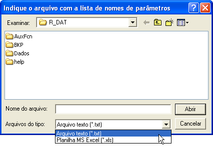
Após localizar
o arquivo, clique “Abrir”. O R_DAT abrirá e
analisará o conteúdo do arquivo.
Para a correta
importação, a lista deve seguir as seguintes
formatações:
Arquivos texto:
- Um nome de
parâmetro por linha.
Planilhas
Excel:
- Uma coluna
contendo nomes de parâmetros;
- Uma linha contendo
nomes de parâmetros;
- Duas colunas
contendo nomes de parâmetros e unidades, respectivamente; ou
- Duas linhas
contendo nomes de parâmetros e unidades, respectivamente.
Exemplos:
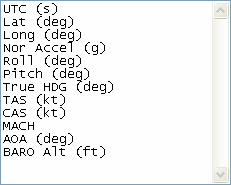
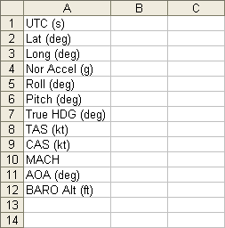 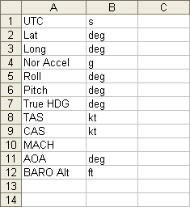
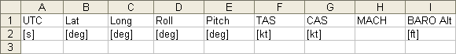
Linhas/colunas
vazias serão descartadas.
Os valores
numéricos da planilha são descartados, ou seja, é
possível importar os nomes de parâmetros de uma planilha completa (com
dados e
parâmetros).
A formatação
das primeiras linhas de texto segue as mesmas
restrições que as matrizes PARAM
e
UNITS.
O tamanho da
lista de nomes deve ser igual ao número de
parâmetros do arquivo corrente, caso contrário não será possível
realizar a
importação.
Após a
importação, o R_DAT atualizará a matriz PARAM.
| |
Carregar
arquivo mat |
Concatenar
arquivo |
|